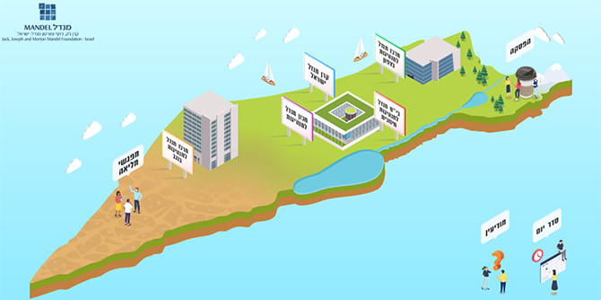
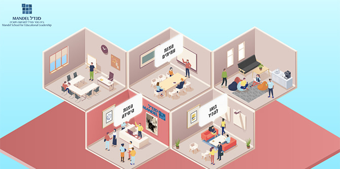
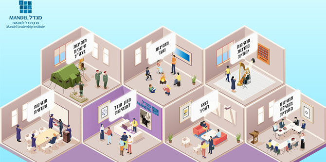
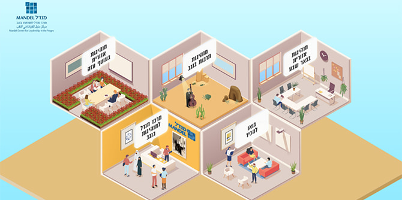
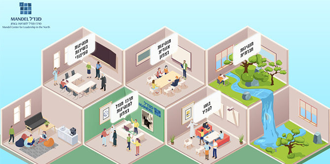
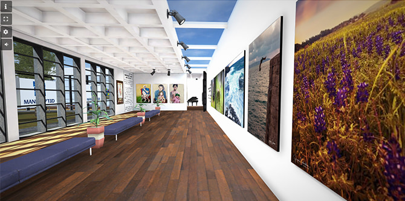

“The goal of this event is to introduce you to the Foundation and its many activities, to help you realize that you are part of something much bigger that is making an impact in the State of Israel, improving things for Israeli society and all of Israel’s citizens,” said the director-general of the Mandel Foundation–Israel, Moshe Vigdor, in his opening remarks.
Participants in the first ever Fellows' Day of the Mandel Foundation–Israel, which was held on March 18, 2021, included the fellows, faculty, and staff of all Mandel programs, as well as the Foundation's administrative staff. Due to COVID-19 restrictions, the event was held in a specially designed virtual space that offered interactive options for direct communication between all participants.
 The main gateway to the virtual spaces in which the Fellows' Day took place
This first Mandel Fellows’ Day brought together the fellows of all the Foundation’s leadership programs for a meaningful learning experience. The event contributed to their sense of belonging to the Foundation and to their familiarity with the Foundation’s activities and fields of interest, and gave them the opportunity to forge connections and interactions with other Mandel fellows.
In a series of parallel sessions, the directors, faculty, and fellows of the Foundation's various programs and units presented the subjects that they are exploring and challenges they are facing, in the context of their respective areas of activity and spheres of influence.
The Mandel School for Educational Leadership presented its policy and management studies, the goals of its humanities curriculum, and its workshops for fellows, to demonstrate the School's pedogical approach to teaching and learning. Several fellows presented their particular areas of interest: Actor and musician
Mohammad Kundas, a fellow in Cohort 28, spoke about culture as a compass for leadership, while filmmaker
Helen Yanovsky, a fellow in Cohort 29, spoke about the camera as an educational tool, focusing on documentary work by young people.
 The virtual space of the Mandel School for Educational Leadership
The Mandel Leadership Institute presented its diverse set of programs, which serve various population groups in Israeli society. Program director
Dr. Naomi Perl,
Dr. Amira Ehrlich, and
Rabbi Menachem Bombach presented the Mandel Programs for Leadership Development in the Haredi Community.
Lior Peri, director of the Mandel IDF Educational Leadership Program, presented the activities of his program.
Dani Rozner, director of the Mandel Program for Youth Leadership, spoke about the non-formal education activities that took place in Israel during the COVID-19 pandemic. Program director
Mishael Zion and faculty members
Dr. Jeremy Fogel,
Dr. Ruth Calderon, and
Malka Puterkovsky, of the Mandel Program for Leadership in Jewish Culture, discussed divisive and unifying forces in Israeli Jewish culture. And program director
Ido Barkan and faculty member
Dr. Nir Michaeli of the Mandel Program for Academic Leadership in Teacher Education discussed tensions in the field of teacher training in Israel.
 The virtual space of the Mandel Leadership Institute
Dr. Adi Nir-Sagi, director of the Mandel Center for Leadership in the Negev, spoke about “Man changes place changes man: Leadership from Eilat to Rahat.” Faculty member
Israel Sorek had a discussion with fellows on the topic of “Between changing reality and changes in reality.” Faculty members
Dr. Rotem Bresler-Gonen and
Dr. Gili Zivan introduced the new Mandel Program for Regional Leadership in the Gaza Border Communities. And faculty members
Professor Dana Arieli and
Dr. Itzhak (Kiki) Aharonovich presented the Mandel Program for Cultural Leadership in the Negev.
 The virtual space of the Mandel Center for Leadership in the Negev
Miki Nevo, director of the Mandel Center for Leadership in the North, who coordinated the Fellow's Day, spoke about “Leadership in a diverse society: What are the necessary conditions, actions, and characteristics?” Faculty member
Safa Garb and
Dr. Yoav Kani presented the Mandel Program for Social Leadership in the North, while faculty member
Daphi Biran Singer and tutor Revital Yahalom described the individual project as an example of the unique nature and purpose of the Mandel Program for Regional Leadership in the North.
Noga Gil Bassi, director of the Mandel Program for Leadership in the Public Service, asked, “Is there even such a thing as leadership in the public service?”
 The virtual space of the Mandel Center for Leadership in the North
During the breaks between sessions, the participants were able to explore a collection of poems written by Mandel fellows. They also had the opportunity to use an online platform to get in touch with fellows from different programs with similar interests, such as environmental issues, volunteering and community, public health, youth at risk, people with disabilities, and more. Those interested in art were able to browse an online gallery of artwork produced by Mandel fellows.

The virtual gallery of artwork produced by Mandel fellows
One of the day’s highlights was a special conversation between Yael Lautman Offir, human resources consultant for the Mandel Foundation–Israel, and Professor Jehuda Reinharz, president of the Jack, Joseph and Morton Mandel Foundation. Professor Reinharz spoke about the late Morton Mandel from his personal perspective as both Mort’s colleague and as someone from whom he learned a great deal. He described their first meeting, their close relationship over the years, and their last conversation just before Mort passed away. At the end of the session, Professor Reinharz fielded questions from fellows.
In the feedback questionnaires completed after the event, the participants expressed a high level of satisfaction. They reported that the Fellows’ Day allowed them to become more familiar with the various areas of activity of the Foundation’s units and programs, introduced them to the dilemmas and challenges faced by those units and programs, and in particular, gave them a greater sense of belonging to the Foundation and a feeling that each and every one of them is “part of something great.”
{kind=link}
{kind=link}
{kind=link}
{kind=link}
{kind=link}
{kind=link}
{kind=link}